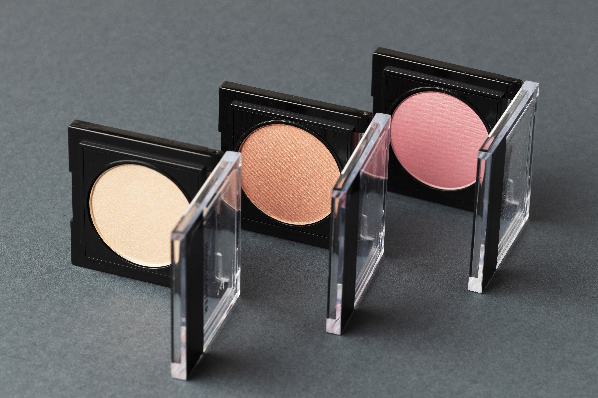

Descripción del producto
Nuestro rubores Celestial Cheeks es una fórmula suave y de larga duración que brinda un toque de color natural a tus mejillas. Su textura sedosa permite una aplicación fácil y suave, proporcionando un acabado radiante y saludable.
Características principales
- Pigmentación ajustable: Se puede construir fácilmente para obtener distintos niveles de intensidad.
- Larga duración: Resistente y permanece durante horas sin desvanecerse.
- Acabado suave y natural: Aspecto natural sin efecto polvoriento o pesado.
- Textura fácil de mezclar: Se difumina sin esfuerzo para una apariencia uniforme.
Tipos de rubores
- Rubores en polvo: Ofrecen una amplia gama de tonos y acabados.
- Rubores líquidos o en crema: Textura cremosa para un aspecto natural y fácil de mezclar.
- Rubores en gel o tinte: Ligeros y transparentes para un aspecto de rubor duradero y natural.